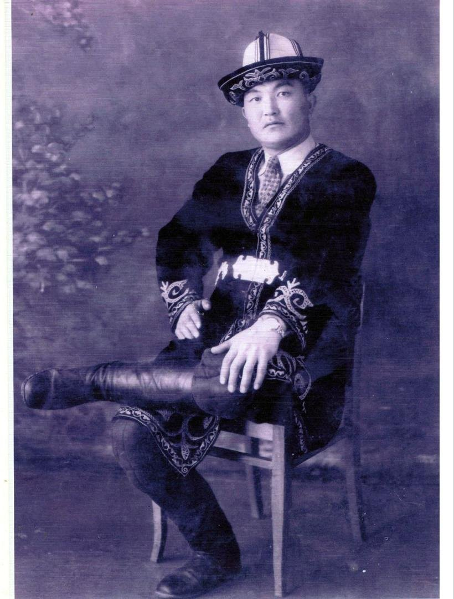
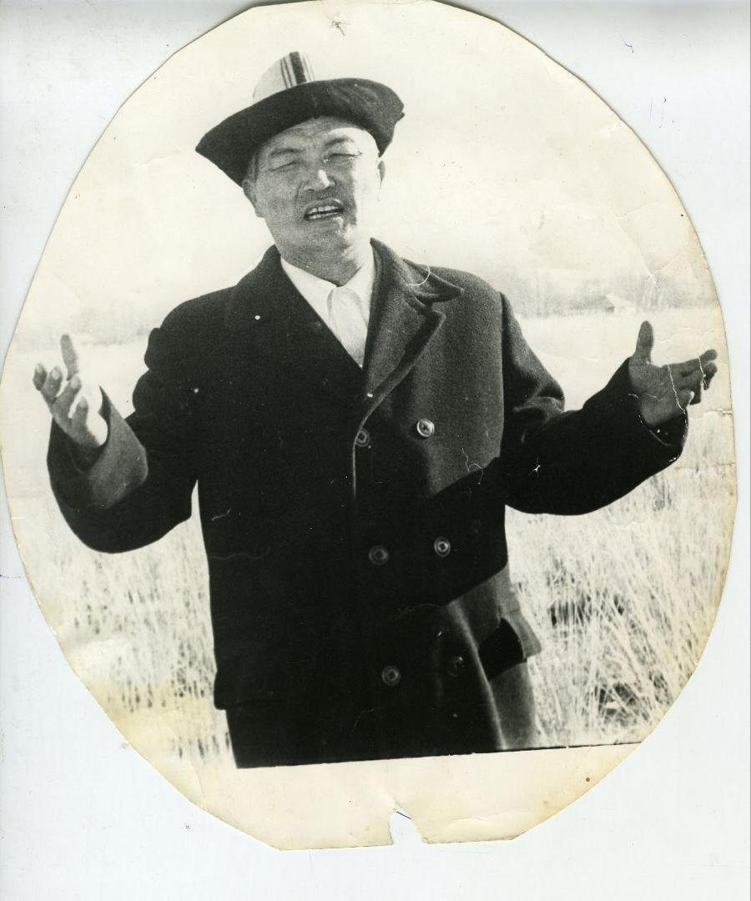
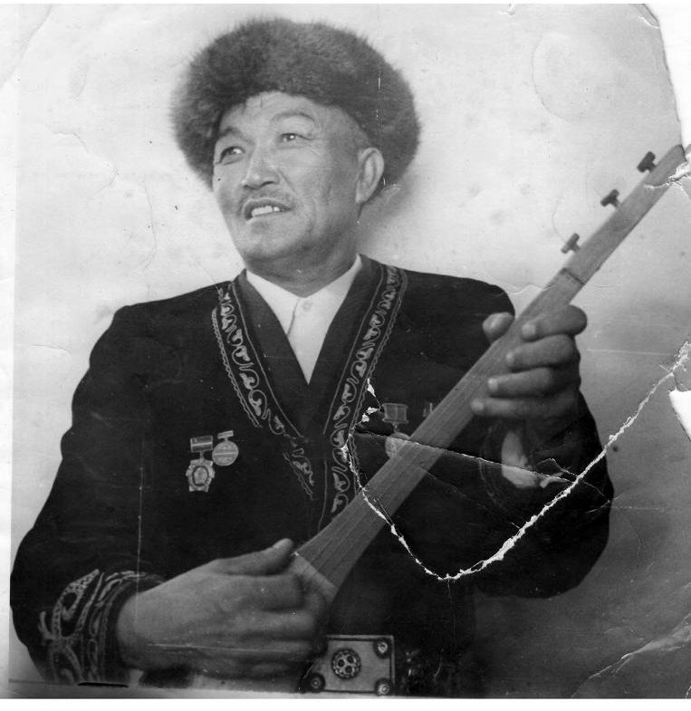
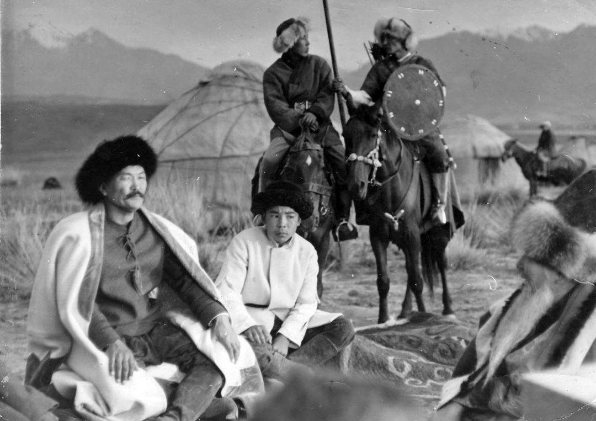
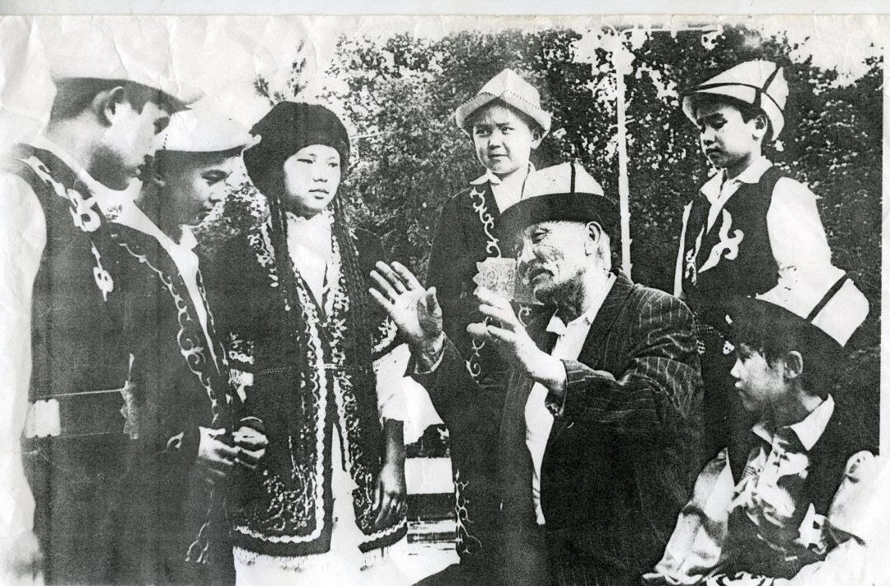

Чойкенин мураскериНаследник Чойке
Шаабай Азиз уулу 1927-жылы Ак-Суу районундагы Үч-Кайнар (Кара-Бөлтөк) айылында туулган. Атасы Азиз — улуу манасчы Чойкенин иниси, ал да көзү ачык, касиеттүү манасчы болгон.
Чойке өз өнөрүнүн мураскери ушул бала болорун алдын ала билип, керээз калтырган. Шаабай «Манасты» алты жашынан айта баштаган, атасы аны далай жерге, элге ээрчитип жүрүп, бардык билгенин үйрөткөн.
Шаабай Азиз уулу родился в 1927 году в селе Уч-Кайнар (Кара-Бөлтөк) Ак-Суйского района. Его отец Азиз — младший брат великого манасчы Чойке — тоже был манасчы, человеком особого дара.
Чойке заранее знал, что наследником его искусства станет этот мальчик, и оставил завет. Шаабай начал сказывать «Манас» с шести лет; отец брал его с собой по сёлам и передал ему всё, что знал.
«Балам, менин олуяларым алдымдан өтүп, ошол болуп жаткан окуя көз алдыма тартылат»«Сынок, мои святые проходят передо мной, и события встают у меня перед глазами»Шаабай Азиз уулу — кантип унутпай айтасыз деген суроогоШаабай Азиз уулу — на вопрос, как он помнит всё наизусть
Түштөгү аянВидение во сне
Үй-бүлөсүнүн эскерүүсү боюнча, бала кезинде ага түшүндө бир абышка көрүнүп: «Мына бул жаткан адам — Манас, эстеп жүр», — дейт. Анан аны кырк боз үйгө киргизип, Алмамбет баштаган баатырлар менен тааныштырат. Атасы Азиз аны Чойкенин бейитинин жанынан талып жаткан жеринен таап келген.
Дагы бир түшүндө Чойке өзү көрүнүп: «Балам, эки кап таштадым: биринде толтура таруу, экинчисинде кум. Ортосундагы сары майга тийбе — Манасың куюлуп калат», — деп аян берген. Ошондон кийин Азиз элин жыйып, кой союп, уулуна бата берип: «Мен эми Манас айтканды койдум, балама өткөрүп бердим», — деген.
По воспоминаниям семьи, в детстве ему приснился старец, который сказал: «Вот лежит Манас — запомни». Потом он провёл мальчика по сорока юртам и познакомил с богатырями во главе с Алмамбетом. Отец нашёл сына без чувств неподалёку от могилы Чойке.
В другом сне ему явился сам Чойке: «Сынок, я оставил два мешка: в одном полно проса, в другом песок. Не трогай масло между ними — твой Манас иссякнет». После этого Азиз собрал народ, зарезал барана, благословил сына и сказал: «Теперь я больше не сказываю Манас — я передал его сыну».
Чойкенин салтыТрадиция Чойке
Шаабай Чойкенин вариантында айткан, ал атактуу Чойкенин салтын улаган эң акыркы манасчы болгон. Чойке тууралуу атасынан жана Саякбай Каралаевден көп уккан.
Анын өзгөчөлүгү — обондорунун түрдүүлүгү жана Манастын урпактарын толук айтышы: «Манас», «Семетей», «Сейтек», «Алымсарык», «Кулансарык», «Алкаяр», «Акжол». Таң аткандан кечке чейин тынымсыз айтып, отурган ордунан алда канча алдыга жылып кетчү.
Шаабай сказывал по варианту Чойке и был последним манасчы, продолжавшим его традицию. О Чойке он много слышал от отца и от Саякбая Каралаева.
Его отличали разнообразие напевов и полнота сказа о потомках Манаса: «Манас», «Семетей», «Сейтек», «Алымсарык», «Кулансарык», «Алкаяр», «Акжол». Он мог сказывать без перерыва от рассвета до вечера, незаметно продвигаясь вперёд с места, где сидел.
Эмгек жолу жана тасмаларРабота и фильмы
1960-жылы Кыргыз мамлекеттик филармониясынын солист-манасчысы, 1973-жылы Пржевальскидеги интернат үйүнүн маданият кызматкери болгон. 1977-жылы Үч-Кайнар айылдык клубун ачып, анын көркөм жетекчиси болгон. Илимдер академиясынын Манас секторуна «Манас», «Семетей», «Сейтек» жана «Алымсарык менен Кулансарык» бөлүмдөрүн жаздырган.
«Казакфильмдин» «Чокан Валиханов» тасмасында жана «Күүнүн сыры» көркөм тасмасында манасчынын ролун ойногон. М. Убукеевдин «Түбөлүктүүлүккө таазим» тасмасына тартылган; ал жөнүндө «Акыркы манасчы», «Азыркынын айкөл манасчысы» даректүү тасмалары тартылган.
В 1960 году он был солистом-манасчы Кыргызской государственной филармонии, в 1973 году — работником культуры в пржевальском интернате, в 1977 году открыл сельский клуб Уч-Кайнара и стал его художественным руководителем. Сектору «Манаса» Академии наук он записал «Манас», «Семетей», «Сейтек» и главы «Алымсарык и Кулансарык».
Он сыграл манасчы в фильме «Казахфильма» «Чокан Валиханов» и в художественном фильме «Күүнүн сыры». Снимался в фильме М. Убукеева «Поклон вечности»; о нём сняты документальные фильмы «Последний манасчы» и «Великодушный манасчы наших дней».
СыйлыктарыНаграды
1995-жылы 21-августта «Кыргыз Республикасынын эл артисти» ардак наамы ыйгарылган. «Манас эпосуна – 1000 жыл» эстелик медалы (1995), «Улуу Ата Мекендик согуш жылдарындагы каармандык эмгеги үчүн» медалы, Жеңиштин 50 жылдыгына арналган юбилейлик медаль, Маданият министрлигинин Ардак грамотасы менен сыйланган.
Шаабай Азиз уулу 2004-жылы 13-декабрда дүйнөдөн кайткан.
21 августа 1995 года ему присвоено почётное звание «Народный артист Кыргызской Республики». Награждён памятной медалью «1000 лет эпосу «Манас» (1995), медалью «За доблестный труд в Великой Отечественной войне 1941–1945 гг.», юбилейной медалью «50 лет Победы», Почётной грамотой Министерства культуры.
Шаабай Азиз уулу скончался 13 декабря 2004 года.
Маанилүү даталарГлавные даты
- 1927 — Үч-Кайнар айылында туулганРодился в селе Уч-Кайнар
- 1933 — Алты жашынан «Манас» айта баштаганС шести лет начал сказывать «Манас»
- 1960 — Кыргыз мамлекеттик филармониясынын солист-манасчысыСолист-манасчы госфилармонии
- 1977 — Үч-Кайнар айылдык клубун ачканОткрыл сельский клуб Уч-Кайнара
- 1995 — Кыргыз Республикасынын эл артисти, «Манас-1000» медалыНародный артист КР, медаль «Манас-1000»
- 2004 — 13-декабрда дүйнөдөн кайтканСкончался 13 декабря
СүрөттөрФотографии






Сүрөттөр Шаабай Азиз уулунун үй-бүлөсүнүн архивиненФотографии из архива семьи Шаабая Азиз уулу
ВидеоВидео
Сквердеги башка манасчыларДругие манасчы в сквере


Үй-бүлөнүн эскерүүсүн жазган — Кымбатбүбү Шаабаевна Азизова, Шаабай Азиз уулунун кенже кызы, Кыргыз Республикасынын эмгек сиңирген артисти. Ата-энесинин, бир туугандарынын жана өзүнүн айтуусу менен.Воспоминания семьи записала Кымбатбүбү Шаабаевна Азизова, младшая дочь Шаабая Азиз уулу, заслуженная артистка Кыргызской Республики, — со слов родителей, родных и по собственной памяти.
Булак:Источник: үй-бүлөнүн эскерүүсү жанавоспоминания семьи и Википедия